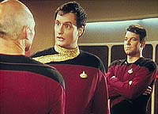
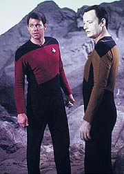
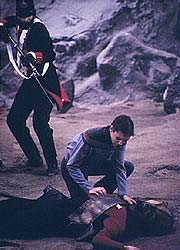
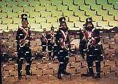

|
MANCHETE
DO EPISDIO
Histria
no passa de uma desculpa
para trazer Q de volta Enterprise
Episdio
anterior | Prximo
episdio
Sinopse:
Data Estelar: 41590.5.
Intrigados com a tripulao da Enterprise aps o ocorrido no episdio
Encontro em Longnqua, Q e as outras entidades do Q-Continuum
desejam estudar a espcie humana mais de perto.
Para esse fim, Q decide conceder um presente e escolhe Riker como o
contemplado. Como resultado, o comandante passa a ter os mesmos
poderes de Q e deve aprender a lidar com eles.
Tudo no passa de um jogo de seduo para convencer Riker a se
tornar um membro do Q e ensinar a eles sobre a extraordinria
vontade de aprender e explorar peculiar aos humanos.

Riker quase convencido por Q, at que decide fazer
"milagres" para seus amigos da Enterprise. Aps ter suas
ddivas recusadas por cada um dos tripulantes, o comandante percebe
o tamanho de sua tolice: o poder no serve de nada se no h
sabedoria para control-lo.
Q mais uma vez fracassa e levado fora pelo Continuum para
ser julgado por seus atos.
Comentrios:
"Hide and Q" mais um episdio com
"moral da histria". Dentre as lies est o carter
essencialmente bom do homem, sua vontade de aprender e sua inesgotvel
sede de conhecimento.

Alm disso, ressalta-se o axioma "poder absoluto corrompe
absolutamente", tantas vezes j trabalhado em Jornada nas
Estrelas, a comear pelo segundo piloto da Srie Clssica,
"Where No Man Has
Gone Before").
O moralismo atribudo ao episdio acaba atropelando o prprio
realismo. A verossimilhana passa longe e traz tona a total
imaturidade dos personagens.
O guerreiro Worf renega seu lado Klingon, Geordi opta por permanecer
cego etc. Tudo para mostrar a Q e audincia o quo nobres e
incorruptveis so aqueles personagens. O problema que essa
demonstrao cobra como preo esquecermos tudo que j havamos
aprendido sobre eles!

Mas quem se deu mal mesmo foi Riker, que caiu direitinho na conversa
fiada de Q. Depois de um incio promissor em "Encounter
at Farpoint", o primeiro-oficial mostrou que ainda tem
muito a aprender com seu capito.
No fim das contas, "Hide and Q" um episdio que
no se justifica: trata-se de apenas uma desculpa para trazer Q de
volta srie, juntamente com o pacote de velhas questes que ele
j havia suscitado no piloto da srie.

Em termos de produo, no h destaques positivos. O cenrio do
planeta de Q ruim, assim como seus aliengenas imaginrios. At
o efeito da barreira da entidade apelou para a reprise, sendo idntico
ao j visto em "Encounter at
Farpoint"!
Em compensao, algumas citaes de Shakespeare, recheadas nos
dilogos entre Q e Picard, do pano para manga (veja em Referncias
culturais).
Citaes:
Q - "Oh, your
species is always suffering and dying."
("Oh, sua espcie est sempre sofrendo e morrendo.")
Q - "Pity, you might have learned an interesting lesson,
Macrohead... with a microbrain."
("Uma pena, voc teria aprendido uma lio interessante,
Macrocabea... com microcrebro.")
Q - "Let us pray for understanding and for compassion."
("Vamos orar por entendimento e por compaixo.")
Picard - "Let us do no such damn thing!"
("Vamos fazer isso porcaria nenhuma!")
Trivia:
 Este episdio foi escrito por Maurice Hurley, sob pseudnimo de
C.J. Holland.
Este episdio foi escrito por Maurice Hurley, sob pseudnimo de
C.J. Holland.
Na
cena em que Q e Picard esto no gabinete do Capito, pode-se ver o
ttulo do livro que Picard tanto aprecia, e que est exposto em
seu gabinete: "The Globe Illustrated Shakespeare". Como
sempre, o livro est aberto no Ato III, Cena 2 de "Sonhos de
uma Noite de Vero".
Aqui
um uniforme de gala de Almirante aparece pela primeira vez, antes de
fazer sua estria oficial no prximo episdio, "Too
Short a Season".
Esta
foi a segunda e ltima apario de John de Lancie como Q nesta
temporada. Ele voltaria apenas no episdio "Q Who",
da 2 temporada, onde apresenta os Borgs tripulao da
Enterprise. Q participou de pelo menos um episdio por temporada,
com exceo da 5 onde ele no apareceu em nenhum... o que foi
compensado na sexta temporada, em que ele apareceu em dois episdios,
"Tapestry" e "True-Q".
Ficha
tcnica:
Histria de C.J. Holland
Roteiro de C.J. Holland e Gene Roddenberry
Direo de Cliff Bole
Exibido em 23/11/1987
Produo: 011
Elenco:
Patrick Stewart como
Jean-Luc Picard
Jonathan Frakes como William Thomas Riker
Brent Spiner como Data
LeVar Burton como Geordi La Forge
Michael Dorn como Worf
Gates McFadden como Beverly Crusher
Marina Sirtis como Deanna Troi
Wil Wheaton como Wesley Crusher
Denise Crosby como Natasha "Tasha" Yar
Elenco convidado:
John de Lancie como
Q
Elaine Nalee como sobrevivente
William A. Wallace como Wesley com 25 anos
Episdio
anterior | Prximo
episdio
|